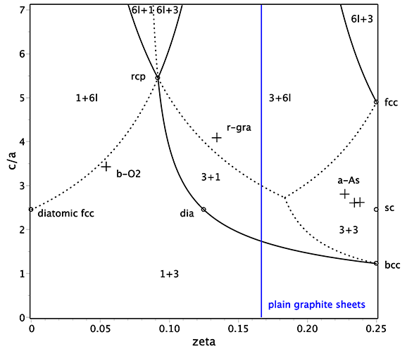
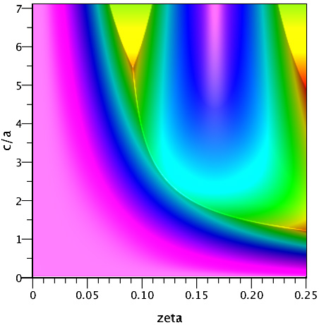

| Structural type | A7 |
| Common name | A7 – alpha-arsenic, rhombohedral graphite (r-graphite) |
| Definition | A7 – distortion of sc towards 3-fold coordination, r-graphite – transitional structure between dia and graphite, beta-oxygen – fcc of diatomic molecules in parallel orientation |
| Prototype | α-As, r-gra, β-O2 |
| Pearson symbol | hR2 |
| Space group | 166 R-3m D3d5 |
| Chemical formula | A |
| Bonding | A7 and r-graphite – covalent in layer |
| Atomic positions | A (6c) 0 0 zeta |
| Coordination | A7 – 3+3 (6ap), r-graphite – 3, beta-oxygen – 1 (see the figure below) |
| PDB files | A7 |
| Parameters | c/a, ζ<1/4 (see the figure below for precise ranges, other zeta can be reduced to ζ<1/4) |
| Special values | plain graphite sheets in abc stacking for zeta=1/4, close packing (rcp) for zeta=1/2-1/sqrt(6) and c/a=3+sqrt(6) with z=10 and δ=2*sqrt(6)-4≈.90 |
| Superstructures | sr for ζ=1/4, in particular, sc for c/a=sqrt(6) (high pressure metallic form of V elements), dia for ζ=1/8 and c/a=sqrt(6), diatomic sr for ζ=0, in particular, diatomic fcc for c/a=sqrt(6) |
| Substances | A7 – semimetals of V elements (see the table below), beta-oxygen – molecular crystals of diatomic molecules |
In close-packed layers notations this structure can be considered as stacked layers in the following positions: A at ±ζ, B at 1/3±ζ, and C at 2/3±ζ. For 0<ζ<1/6 we have AABBCC stacking and for 1/6<ζ<1/4 the stacking is ABCABC (the period is 6 layers). Hence rcp is not a local maximum in packing – sliding AA layers apart enhances the packing.
 | A | a | c/a | zeta | |
|---|---|---|---|---|
| N | at P>150 GPa but it is metastable (cubic-gauche is stable) | |||
| P | at P>5GPa | |||
| α-As | 3.760 | 2.805 | .227 | |
| Sb | 4.307 | 2.617 | .238 | |
| Bi | 4.535 | 2.605 | .234 |